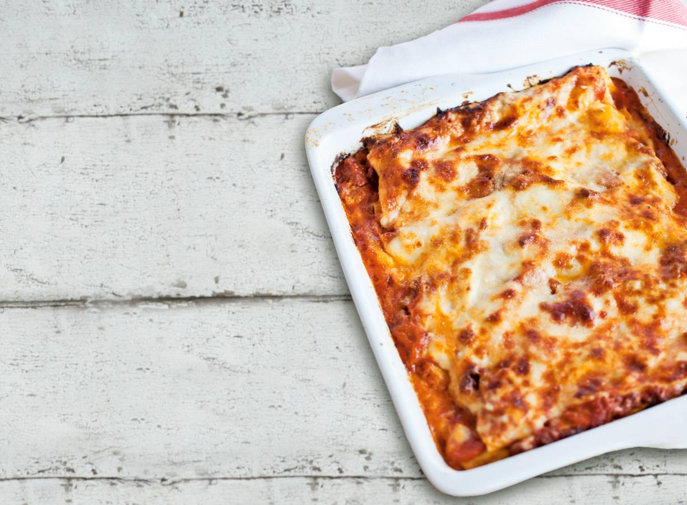

Lasagna

Beschrijving
Designer Lasagna
Njam!
Ingrediënten
- Lasagna bladeren
- Twee blikken tomatenblokjes
- Eén blikje tomatenpuree
- 250g Gehakt
- Eén lepel olijfolie
- Enkele blaadjes basilicum
- Sneufje zout
- Sneufje peper
- 250g Strooikaas
Stappen
- Verwarm de oven voor op 180 graden celcius.
- Doe de olijfolie in een pan en bak het gehakt.
- Voeg de blikken tomatenblokjes en het blikje tomatenpuree toe aan de pan.
- Voeg hieraan het zout, peper en basilicum aan toe.
- Neem een ovenschaal en maak een bodem met saus van de pan.
- Voeg hierboven een laag met lasagna bladeren toe.
- Herhaal stap 5 en 6 tot de ovenschaal bijna volledig gevuld is of tot de saus op is.
- Werkaf met strooikaas en zet de schaal 40 minuten in de oven.